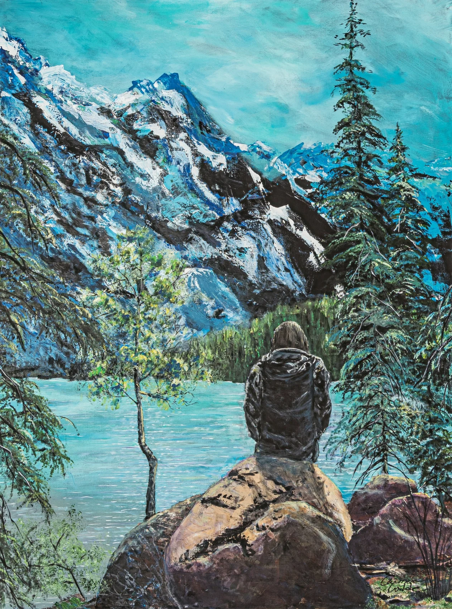

A memory made lasting.
Carmen creates custom acrylic paintings inspired by the photos, places and moments that mean the most to you.
Artfully brought to life.
Whether it’s a favourite vacation, a wedding memory or a meaningful landscape, a commissioned painting turns a personal experience into original art for your home.
Custom works range from 10 × 10 inches to 48 × 48 inches. Carmen works with you to understand the story behind your photograph, choose a suitable size and create a one-of-a-kind acrylic painting.
“I take the time to get to know you and understand what the photo means to you. We collaborate to make a statement art piece that reflects your vision.” — Carmen Wilde
Ask about a commission